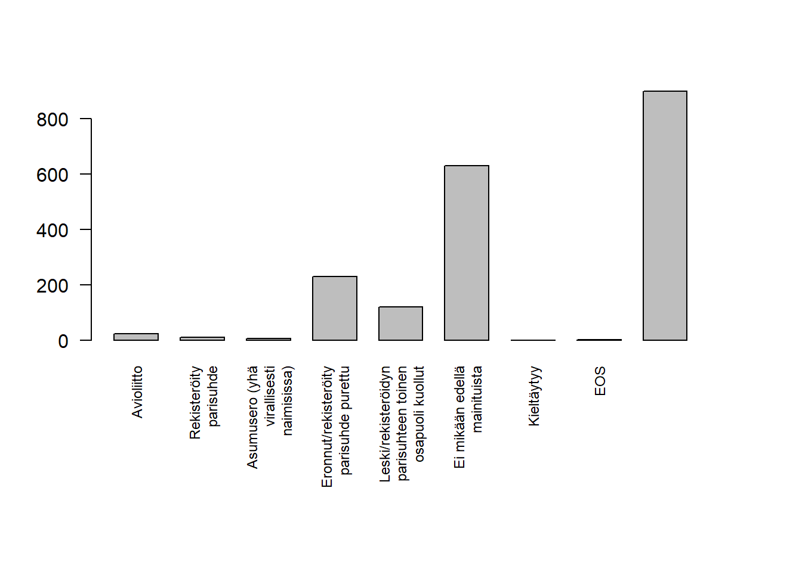

2 Harjoituskerta 2
| Osa | Käsiteltävät asiat (viitteellinen asiasisältö, muutoksia voi tulla) |
| 1 | RStudioon ja R-kieleen tutustuminen |
| 2 | Aineiston kuvailu: frekvenssijakauma, tunnusluvut, kuviot, osa-aineiston poimiminen ja aineston ryhmittäinen tarkastelu |
| 3 | Yksinkertaiset muuttujamuunnokset, kahden muuttujan välinen yhteisvaihtelu, ristiintaulukointi |
| 4 | Korrelaatiot ja hajotakuvio, summamuuttujan tekeminen |
| 5 | Keskiarvotestit: t-testi ja ANOVA |
| 6 | Kertausta ja ohjausta ryhmätehtävään |
2.1 Valmiin aineiston tuominen R:ään
- Ohjeet löytyvät täältä
# Asennetaan "memisc"-niminen paketti
install.packages('memisc')
# Otetaan käyttöön kyseinen paketti
library(memisc)
# Ladataan aineisto R:ään, korjaa polku tiedostoon oikeaksi eli
# laita "D:/data.por" tilalle se tiedostopolku, johon talletit datan
ds <- as.data.set(spss.portable.file("D:/data.por"))
# Muutetaan heti useammin käytettyyn dataframe-muotoon
df <- as.data.frame(ds)2.2 Aineiston kuvailu
Frekvenssijakaumat
Muuttujan frekvenssijakaumaa voi tutkia funktiolla table. Prosenttijakauman saa näkymään funktiolla prop.table, jolle annetaan argumentiksi table-objekti.
frekvenssitaulu <- table(df$F11, useNA = "always")
frekvenssitaulu##
## Avioliitto
## 24
## Rekisteröity parisuhde
## 11
## Asumusero (yhä virallisesti naimisissa)
## 7
## Eronnut/rekisteröity parisuhde purettu
## 230
## Leski/rekisteröidyn parisuhteen toinen osapuoli kuollut
## 122
## Ei mikään edellä mainituista
## 630
## Kieltäytyy
## 0
## EOS
## 2
## <NA>
## 899prop.table(frekvenssitaulu)##
## Avioliitto
## 0.012467532
## Rekisteröity parisuhde
## 0.005714286
## Asumusero (yhä virallisesti naimisissa)
## 0.003636364
## Eronnut/rekisteröity parisuhde purettu
## 0.119480519
## Leski/rekisteröidyn parisuhteen toinen osapuoli kuollut
## 0.063376623
## Ei mikään edellä mainituista
## 0.327272727
## Kieltäytyy
## 0.000000000
## EOS
## 0.001038961
## <NA>
## 0.467012987Pylväsdiagrammi
# Muutetaan kuvan marginaaleja
par(mar=c(10, 4, 4, 4))
# Jaetaan merkkijonot useammalle riville, niin näkyvät paremmin kuvassa
levels(df$F11) <- str_wrap(levels(df$F11), 20)
frekvenssitaulu <- table(df$F11, useNA = "always")
# las-parametri vaihtaa x-akselin labeleiden suunnan, space-parametrilla muutetaan
# pylväiden etäisyyksiä, cex.names-parametrilla muutetaan x-akselin tekstin kokoa
barplot(frekvenssitaulu, las = 2, space = c(0.5), cex.names = 0.75)